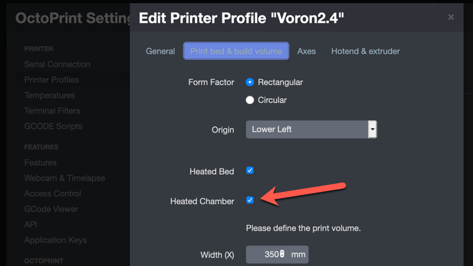

While the two functions can be combined, if doing just chamber temperature the process is slightly different so they are documented separately. The exhaust fan is already configured as part of the default build so no information on installation is provided.
https://github.com/alchemyEngine/VoronUsers/tree/master/firmware_configurations/klipper/alch3my
If just doing chamber temperature monitoring, add the following code to the printer configuration.
Note: Confirm that the thermistor type matches the type used.
[temperature_sensor chamber]
sensor_type: NTC 100K beta 3950
sensor_pin: z:P0.24
min_temp: 0
max_temp: 100
gcode_id: C
Restart Klipper with a FIRMWARE_RESTART.
To have the exhaust fan controlled by the chamber temperature, do the following.
[heater_fan exhaust_fan]Note: Confirm that the thermistor type matches the type used.
[temperature_fan chamber]
pin: z:P2.7
max_power: 1.0
shutdown_speed: 0.0
kick_start_time: 5.0
cycle_time:0.01
off_below:0.1
sensor_type: NTC 100K beta 3950
sensor_pin: z:P0.24
min_temp: 0
max_temp: 70
target_temp: 35.0
control: watermark
gcode_id: C
Add another section with a new macro.
[gcode_macro M141]
default_parameter_S: 0
default_parameter_P: 0
gcode:
SET_TEMPERATURE_FAN_TARGET temperature_fan="chamber" target={S}
Restart Klipper with a FIRMWARE_RESTART.
With this configuration, the fan will run at 100% anytime the chamber temperature is above 35C. The temperature is configurable later.
Note: As of Klipper 0.8.0, the fan speed is not dynamically changeable using the temperature_fan object.
In Octoprint, enable the chamber temperature sensor by going into Settings -> Printer Profiles -> Printer. Edit the profile and go under “Print bed and Build volume”. Locate the checkbox for “Heated Chamber” and enable it.

The chamber temperature will now be displayed and graphed in the temperature chart. None of the Voron printers include a chamber heater so setting the chamber temperature will not function.
To display the chamber temperature on the front panel display, additional configuration is required.
[include lcd_tweaks.cfg] to include the file.{% set chamber = printer['temperature_fan chamber'] %}
and replace with
{% set chamber = printer['temperature_sensor chamber'] %}
FIRMWARE_RESTART/tmp/klippy.log for more information.In the slicer or with other commands, run the M141 command anytime to change the set point of the exhaust fan.
For example:
M141 S70 in the start g-code to hold the chamber at a high temperature for the duration of the printM141 S35 in the ending g-code to cooldown the chamber after a print is completed.